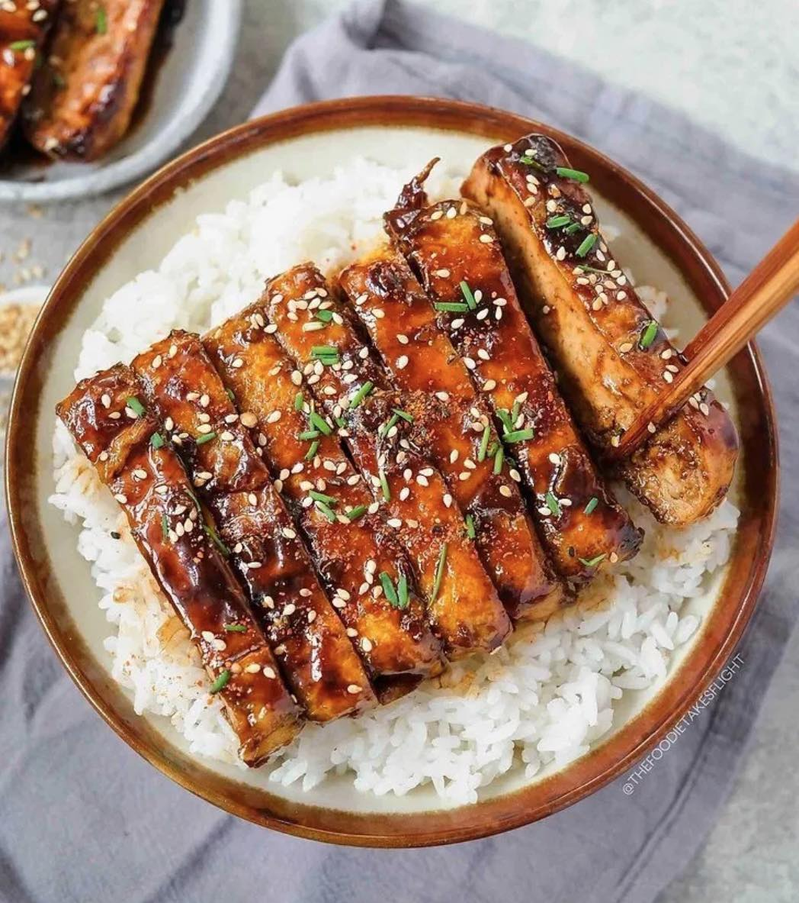

Maple Hoisin Tofu

Description
This is a delicious recipe that I make for my girlfriend Serra and I all the time. It doesn't take too long to make, is cheap,
and is absolutely delicious. Once you fry the tofu, you add in the sauce and cook it until it completely coats the tofu and
then serve it on rice or your choice of grain. You can top it with sesame seeds or green onions or just eat it without them,
it is delightful either way. I recommend cooking the sauce until it completely glazes onto the tofu as that is how you maximize
the flavor!
Ingredients
- 1 lb Tofu -- Extra firm
- 2 Tbsp Hoisin Sauce
- 3-4 Tbsp Maple syrup
- Your choice of spice addons - I like sriracha (1 tsp)
- 1 tsp Minced Garlic
- 1 tsp Soy Sauce
- 1-2 Cups of rice
- Sesame Seeds or Green Onions optional
- Cooking oil
Steps
- Drain and fry the tofu in a wok until the sides are golden brown. I cut my tofu into strip shapes and cook on medium high heat
- While the tofu is frying, add the rest of the ingredients in a bowl and mix to make a sauce
- Once the tofu is done, drain the oil off and add the sauce into the wok on low heat
- Cook the sauce for 1-2 minutes stirring consistently
- Add the tofu into the sauce and cook another 2-3 minutes until it glazes onto the tofu
- Serve over the warm rice (I like to season my rice first) and enjoy!